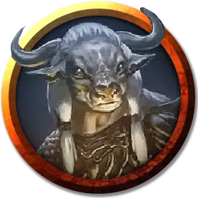

Брусифа
Brusipha
Средний Гуманоид (Минотавр, Колдун), хаотично-злой, именной НИП

Класс Доспеха 14 (природный доспех)
Хиты 90 (12к8 + 36)
Скорость 40 футов
| мод | спас | ||
|---|---|---|---|
| СИЛ | 18 | +4 | +4 |
| ЛОВ | 11 | +0 | +0 |
| ТЕЛ | 16 | +3 | +3 |
| мод | спас | ||
|---|---|---|---|
| ИНТ | 12 | +1 | +1 |
| МДР | 16 | +3 | +3 |
| ХАР | 16 | +3 | +3 |
Навыки Восприятие +7, Обман +5, Религия +3
Чувства тёмное зрение 60 футов, пассивное Восприятие 17
Языки Общий, Бездны
Опасность 3 (700 опыта)
Бонус мастерства +2
Особенности
Запоминание лабиринта. Брусифа может с лёгкостью вспомнить любой пройдённый путь.
Демонический ритуал. Брусифа может потратить 3 часа на совершения ритуала, вызывающий 1к3 + 1 барлгуры [barlgura] или 1 хезроу [hezrou]. Во время этого ритуала она должна принести в жертву Бафомету живое существо Среднего или большего размера, и ритуал может быть совершен только ночью. Призванные демоны исчезают на рассвете.
Действия
Мультиатака. Брусифа совершает две атаки Мистическим зарядом.
Мистический заряд. . Дальнобойная атака заклинанием: +5 к попаданию, дистанция 120 футов, одна цель. Попадание: 8 (1к10 + 3) урона силовым полем.
Бодание. . Рукопашная атака оружием: +6 к попаданию, досягаемость 5 футов, одна цель. Попадание: 8 (1к8 + 4) колющего урона. Если Брусифа переместится как минимум на 10 футов по прямой к существу, а затем в том же ходу попадет по нему атакой, эта цель дополнительно получает 4 (1к8) колющего урона. Если целью является существо, оно должно преуспеть в спасброске Силы Сл 14, иначе оттолкнётся от Брусифы на 10 футов и упадёт ничком.
Натравливание охотников (перезаряжается после короткого или продолжительного отдыха). Брусифа позволяет союзникам в пределах 30 футов, у которых есть особенность Безошибочный следопыт, совершить реакцией одну атаку оружием по отмеченной этим союзником цели.
Использование заклинаний. Брусифа накладывает одно из следующих заклинаний, не нуждаясь в материальных компонентах, используя Харизму в качестве базовой характеристики (Сл спасброска заклинания 13):
• Неограниченно: фокусы [prestidigitation], разговор с животными [speak with animals]
• 1/день каждое: проклятие [bestow curse], приказ [command], корона безумия [crown of madness]
Бонусные действия
Безошибочный следопыт. Брусифа магическим образом создаёт психическую связь с одним существом, которое она видит. На следующий час Брусифа в точности определяет текущее местоположение своей цели и расстояние до неё, если цель находится на том же плане существования. Связь обрывается, если Брусифа становится недееспособной или если Брусифа применяет эту способность на другую цель.
Реакции
Благословение Бафомета. Когда Брусифа уменьшает хиты враждебного существа до 0, она получает 8 временных хитов.